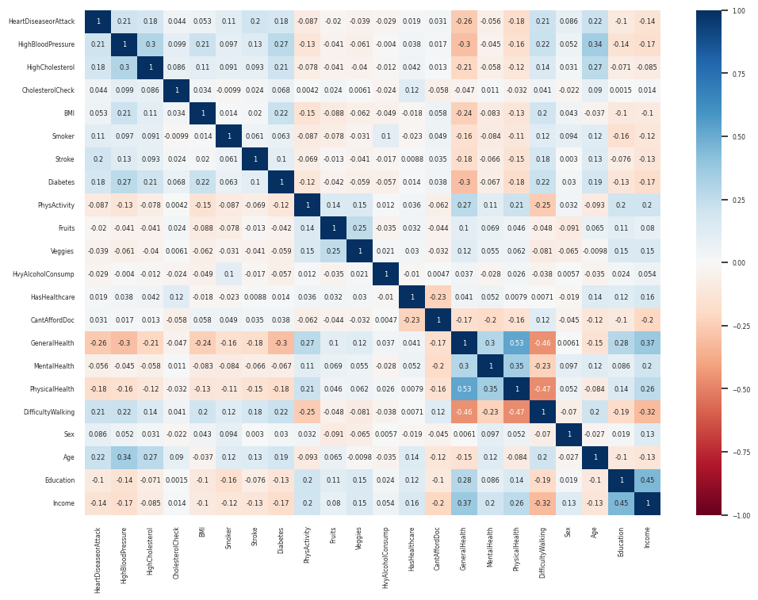
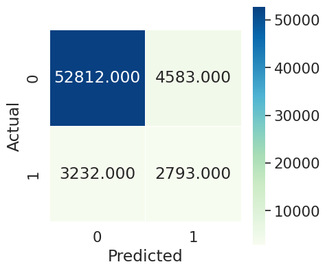

Project Overview:
In this project, I delved into the realm of health analytics, specifically focusing on heart disease prediction. Utilizing the comprehensive Heart Disease Health Indicators Dataset from Kaggle, the project aims to uncover the intricate connections between various health factors and the likelihood of heart disease.
Objectives:
The primary goal is to predict heart disease occurrences by analyzing an array of health indicators. This involves a detailed exploratory data analysis to identify key patterns and relationships within the data.
Methodology:
To achieve our objectives, the project employs Python's robust data science libraries. Initial steps include rigorous data cleaning and preprocessing to ensure the integrity and accuracy of the analysis. The exploratory phase examines various health indicators, seeking patterns and notable correlations with heart disease cases.
Advanced machine learning techniques, including Random Forest and K-Nearest Neighbors (KNN), form the core of our predictive analysis. These methods allow for the development of models capable of predicting heart disease based on the identified risk factors.
Key Findings and Insights:
Visualizations
-

The analysis reveals that several factors are strongly correlated with heart disease/attack, including general health, high blood pressure, age, and physical health. These findings suggest that maintaining good physical health and managing blood pressure and cholesterol levels can help reduce the risk of heart disease/attack. While smoking has a lower correlation with heart disease/attack compared to other factors, it is still a well-established risk factor for cardiovascular disease. Research has shown that smokers have a higher risk of heart disease/attack compared to non-smokers, and quitting smoking can help reduce this risk. Further research could investigate the differences in risk between smokers and non-smokers and explore the potential benefits of different smoking cessation strategies.
Logistic Regression on the Oversampled Dataset
-

So with minimal negative effect on accuracy, this relatively simple sampling technique almost doubled our f1 score, from about 23% to about 42%. Using the same oversampled dataset, we will next see if ensemble modeling methods provide similar improvements.
SVM using Tuned Class Weights and the Original Dataset
Conveniently, Scikit-learn's support vector machine (SVM) class has a tunable parameter called "class weight" which will correct for imbalanced class distribution. Using SVM we can then account for our imbalanced data without special sampling techniques. In order to tune correctly, we will first train multiple models with varying class weights on small subsets of the data (due to long SVM training runtimes).

From the above graph, it seems that 4 is the optimal class weight for the sparse class. We will use it as the parameter for our final SVM model as we determine the overall f1 score for SVM:
Challenges:
- It seems that there was not a good enough correlation between features and targets to achieve satisfactory accuracy/f1 score with the models used. In the end it was not possible to find a model that scored high in accuracy and f1 score. The methods used seemed to have an upper limit on accuracy of about 90%. Any increase in model sophistication improved f1 score, but lowered accuracy due to false positive rate.
- It was cumbersome to determine parameters/hyperparameters for sampling methods and models to maximize f1 score. Sampling and modeling techniques could both be varied with multiple input parameters, meaning many possible input combinations (i.e. number of undersampled subsets to split into, choice of classification models in stacking ensemble, etc.). This often meant burdensome trials to determine optimized parameters empirically.
- The dataset did not always represent information in an intuitive way. This included columns such as general health rating, in which a higher value initially signaled poor health and a lower value signaled better health. This initial representation was confusing and counter-intuitive. Only after reading source documents did it become clear what each column represented, and we were then able to make adjustments and increase the readability of the dataset.
Potential Next Steps
- Curate new features: The Behavioral Risk Factor Surveillance System analysis of which this dataset is a subset contains dozens of features that were not assessed in this project. Moving forward, it would be interesting to see if any of these features are more correlated to heart disease/attack, and could be used to build better predictive models.
- External validation: Validate the model using external datasets, if available, to assess its generalization capabilities and ensure it works well on diverse populations and scenarios.
- Utilize neural networks: Even with creative sampling techniques and ensemble methods, the models used in this project were not sophisticated enough to produce satisfactory results. It might instead be worthwhile to create and train a deep neural network to better predict heart disease/attack given the above feature set.
- Incorporate domain knowledge: Consult with medical experts and incorporate domain knowledge to better understand the features that may influence heart disease/attack and to help inform the feature selection process.
Conclusion:
The project not only highlights my proficiency in data analysis and machine learning but also underscores the potential of these technologies in impacting healthcare outcomes. Through this study, we gain valuable insights into the indicators and risks associated with heart disease, paving the way for more informed healthcare strategies.